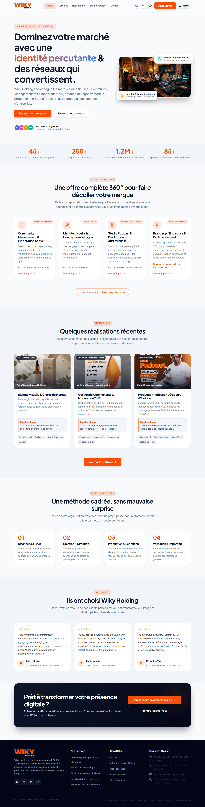
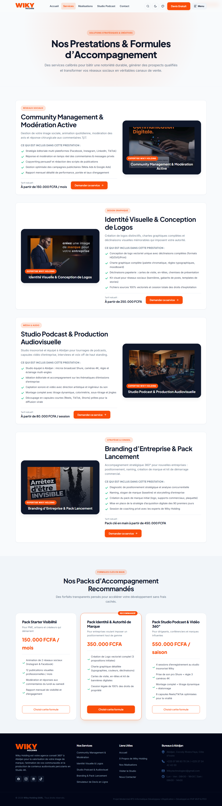
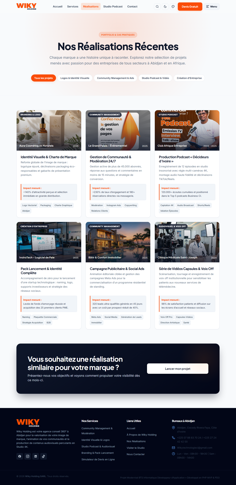
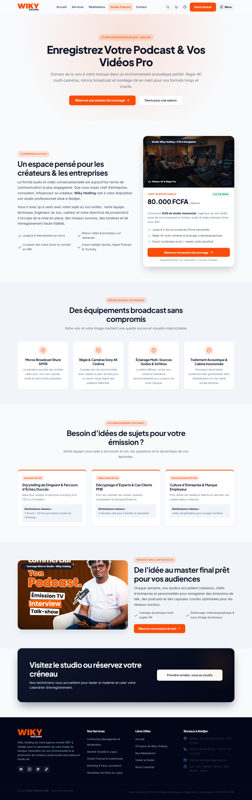
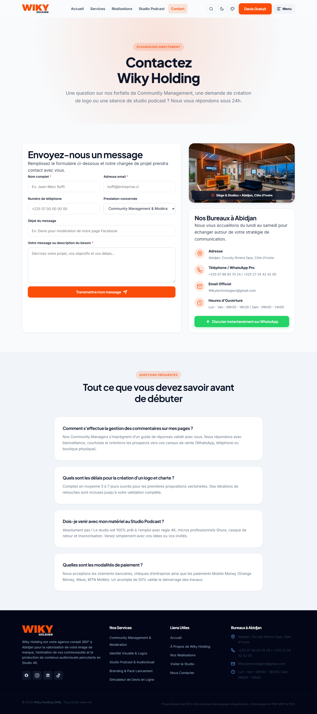
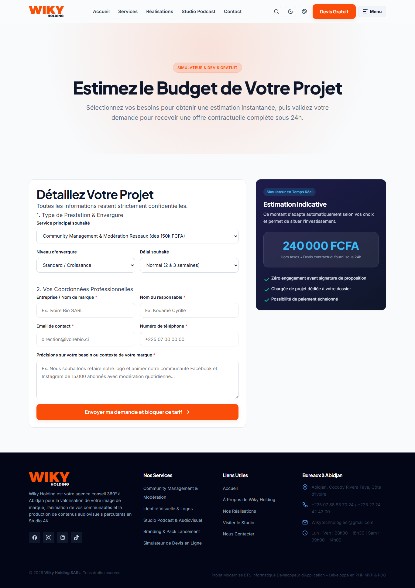
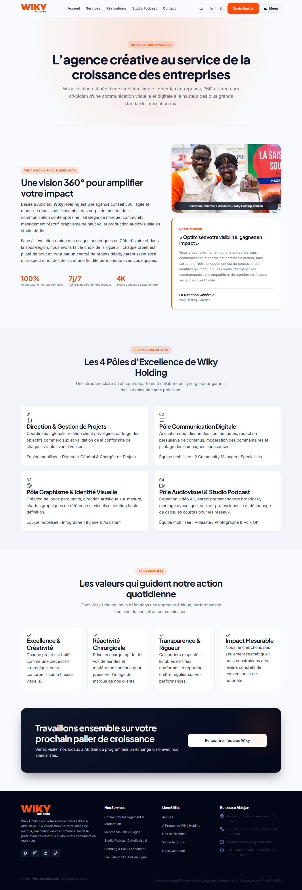
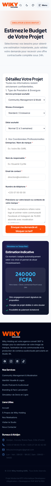

RAPPORT DE STAGE
« Seul on va plus vite, ensemble on va plus loin. »
Je tiens à exprimer ma profonde reconnaissance à l'ensemble de l'équipe de Wiky Holding SARL pour m'avoir accueillie au sein de son agence et pour la confiance accordée tout au long de ce stage. Un merci tout particulier à mon maître de stage pour son accompagnement, ses conseils techniques et sa disponibilité.
Je remercie également mes formateurs et l'équipe pédagogique de mon établissement pour leur encadrement et leur suivi rigoureux durant la préparation de ce rapport et de ma soutenance.
Enfin, je remercie ma famille et mes proches pour leur soutien moral et leur patience durant cette période de formation intensive.
Le stage en entreprise constitue une étape déterminante du parcours du Brevet de Technicien Supérieur (BTS) Informatique, option Développeur d'Application (IDA). Il a pour objectif de confronter l'étudiant(e) aux réalités du métier de développeur, d'appliquer les connaissances théoriques acquises en formation et de développer une compétence professionnelle concrète au service d'un besoin réel d'entreprise.
Ce rapport présente le travail réalisé lors de mon stage au sein de Wiky Holding SARL, une agence conseil 360° basée à Abidjan (Côte d'Ivoire), spécialisée dans le community management, l'identité visuelle (branding), le studio podcast et la création d'entreprise. L'entreprise disposait d'un ancien site vitrine sous WordPress qui n'est plus opérationnel. Dans le cadre de ce stage, il m'a été confié la mission de concevoir et développer un nouveau site web moderne, propriétaire et performant, adapté aux métiers de l'agence et déployable sur un hébergement gratuit de type InfinityFree.
Afin de correspondre au profil métier de Développeur d'Application (IDA), le site a été intégralement recodé en PHP Vanilla moderne, sous architecture MVP / MVC, avec une couche d'accès aux données par PDO (requêtes préparées, protection contre les injections SQL), sans dépendance à un CMS tiers. Cette approche démontre une maîtrise complète de la programmation, du routage, de la base de données relationnelle et de la sécurité applicative.
Le document est structuré en deux grandes parties : une première partie dédiée à l'entreprise d'accueil (contexte, métiers, organisation), et une deuxième partie — le cœur du rapport — consacrée à la conception et au développement du nouveau site web, illustrée par des captures d'écran réelles de l'application fonctionnelle.
Wiky Holding (également désignée Digital Agency Wiky) est une agence conseil 360° basée à Abidjan, Cocody Riviera Faya, en Côte d'Ivoire. Elle accompagne les marques, PME, créateurs et dirigeants dans la valorisation de leur image de marque, l'animation de leurs communautés digitales et la production de contenus audiovisuels percutants.
| Information | Détail |
|---|---|
| Nom légal | Wiky Holding SARL |
| Enseigne | Digital Agency Wiky / Wiky Holding |
| Siège social | Abidjan, Cocody Riviera Faya, Côte d'Ivoire |
| Téléphone / WhatsApp | +225 07 88 83 70 24 / +225 27 24 42 42 00 |
| Wikytechnologieci@gmail.com | |
| Horaires | Lun - Ven : 08h30 - 18h30 | Sam : 09h00 - 14h00 |
Wiky Holding intervient sur quatre pôles de compétences complémentaires, couvrant l'ensemble de la chaîne de valeur de la communication moderne :
L'agence est organisée en pôles opérationnels pilotés par une direction générale et une chargée de projets dédiée, garantissant un suivi personnalisé de chaque client et le respect des délais de livraison. Durant le stage, j'ai intégré l'équipe technique en tant que développeuse, en collaboration avec les chargés de communication et les graphistes pour traduire les besoins métiers en fonctionnalités web concrètes.
L'environnement de travail repose sur des outils numériques collaboratifs, une veille constante sur les tendances du digital en Afrique de l'Ouest, et une exigence de qualité sur les livrables (charte graphique, respect des délais, reporting de performance).
Cette partie constitue le cœur du rapport de stage. Elle détaille la conception, le développement et la validation du nouveau site web de Wiky Holding, développé sur mesure en PHP MVP/MVC + PDO, en remplacement de l'ancien site WordPress devenu indisponible.
L'ancien site de l'agence était construit sous WordPress avec le constructeur Elementor. Celui-ci n'est plus disponible et ne correspond plus aux exigences du profil Développeur d'Application (IDA), qui implique une maîtrise du code propriétaire, de l'architecture logicielle et de la gestion de base de données.
| Critère | Ancienne approche (WordPress) | Nouvelle approche (PHP MVP + PDO) |
|---|---|---|
| Profil métier | Intégrateur CMS / No-Code | Développeur d'Application (IDA) |
| Maîtrise du code | Dépendance aux thèmes et plugins | 100 % de code propriétaire et structuré |
| Vitesse d'affichage | Lourd (> 3 s, requêtes multiples) | Ultra-rapide (< 500 ms, CSS et JS purs) |
| Accès aux données | Abstrait par WordPress | Requêtes préparées PDO explicites |
| Sécurité | Failles récurrentes de plugins | Sanitisation, tokens CSRF, échappement XSS |
| Hébergement | CMS lourd, dépendances | Compatible InfinityFree (Apache/PHP/MySQL standard) |
| Indépendance | Maintenance complexe des versions | Pérennité totale sur n'importe quel hébergeur |
Le projet folgt le patron d'architecture MVP / MVC (Model-View-Presenter / Model-View-Controller), assurant une séparation claire des responsabilités :
| Couche | Rôle | Fichiers principaux |
|---|---|---|
| Modèle (Model) | Accès aux données et logique métier (requêtes PDO). | `app/Models/*Model.php` |
| Vue (View) | Affichage HTML et templates de pages. | `app/Views/pages/*.php` + `layout/` |
| Contrôleur (Controller) | Routage des actions, traitement des requêtes, passage des données aux vues. | `app/Controllers/*Controller.php` |
| Contrôleur frontal | Point d'entrée unique qui route chaque URL vers le bon contrôleur. | `index.php` |
| Configuration | Constantes de l'application, helpers, connexion base de données. | `app/Config/App.php`, `Database.php` |
Le fichier `index.php` agit comme Front Controller : il analyse l'URL demandée (paramètre `?page=` ou réécriture via `.htaccess`), instancie le contrôleur correspondant et génère la page. Cette architecture rend le code maintenable, testable et évolutif.
Le site repose sur une base de données relationnelle avec deux tables dynamiques, accessibles via PHP Data Objects (PDO) avec requêtes préparées afin de se prémunir contre les injections SQL :
| Table | Champs principaux | Usage |
|---|---|---|
| messages | id, name, email, phone, service, subject, message, created_at | Stockage des messages du formulaire de contact. |
| devis_requests | id, company_name, contact_name, email, phone, service_type, budget_range, urgency, project_details, created_at | Enregistrement des demandes de devis du simulateur. |
La classe `Database` implémente un singleton PDO. Elle tente d'abord une connexion MySQL (hébergement InfinityFree ou local WAMP/XAMPP) et bascule automatiquement sur SQLite en mode démonstration si MySQL n'est pas configuré, garantissant ainsi un fonctionnement immédiat en toute circonstance. Les tables sont créées automatiquement si elles n'existent pas.
clamp(), polices Google Fonts (Inter, Plus Jakarta Sans).prefers-reduced-motion (accessibilité).Les captures ci-dessous ont été réalisées directement sur le site en fonctionnement local (serveur PHP intégré, `http://localhost:8000`). Elles illustrent le rendu réel de chaque page du nouveau site Wiky Holding.








Avant la mise en production, une campagne de tests a été menée pour valider le bon fonctionnement du site sur l'environnement local (WAMP / serveur intégré PHP) et corriger les anomalies détectées.
| Élément testé | Cas de test | Résultat | Statut |
|---|---|---|---|
| Chargement des pages | Accueil, À propos, Services, Portfolio, Podcast, Contact, Devis | Toutes les pages s'affichent sans erreur PHP | ✓ Validé |
| Routage MVC | Changement de page via `?page=` et URLs réécrites | Le Front Controller redirige vers le bon contrôleur | ✓ Validé |
| Base de données | Création automatique des tables (MySQL et SQLite fallback) | Tables créées, PDO connecté en singleton | ✓ Validé |
| Formulaire Contact | Soumission avec données valides et invalides | Validation OK, message enregistré, flash affiché | ✓ Validé |
| Formulaire Devis | Soumission complète et champs manquants | Enregistrement en base, simulation de prix affichée | ✓ Validé |
| Simulateur de devis | Changement de service / envergure / urgence | Prix recalculé en temps réel (JS) en FCFA | ✓ Validé |
| Sécurité CSRF | Soumission sans jeton ou jeton falsifié | Rejet de la requête, message d'erreur affiché | ✓ Validé |
| Responsive | Affichage desktop (1366 px) et mobile (375 px) | Mise en page adaptative, menu hamburger fonctionnel | ✓ Validé |
| Page 404 | Accès à une route inexistante | Page 404 personnalisée affichée avec code HTTP 404 | ✓ Validé |
Lors des tests, les anomalies suivantes ont été corrigées : cohérence des chemins d'assets (`ASSETS_URL`), adaptation de la syntaxe de date SQL entre MySQL (`NOW()`) et SQLite (`datetime('now')`), initialisation du jeton CSRF avant affichage des formulaires, et gestion du fallback SQLite pour permettre une démonstration immédiate sans configuration MySQL.
Le site a été conçu pour être déployé indifféremment en local (WAMP / XAMPP / serveur intégré PHP) et en production sur l'hébergeur gratuit InfinityFree, compatible Apache/PHP/MySQL sans dépendance lourde (aucune installation Node/Composer requise à l'exécution).
C:\wamp64\www\achelyrapport.database.sql dans phpMyAdmin ou laisser le mode SQLite fallback s'en charger automatiquement.http://localhost/achelyrapport/.Ce stage a permis de mettre en pratique l'ensemble des compétences du référentiel BTS Informatique Développeur d'Application : analyse d'un besoin métier, conception d'une architecture logicielle (MVP/MVC), développement en PHP natif avec accès aux données par PDO, sécurisation des formulaires (CSRF, XSS, requêtes préparées), développement front-end responsive et accessible, tests fonctionnels et déploiement en production.
Le nouveau site de Wiky Holding remplace avantageusement l'ancien site WordPress indisponible. Il offre à l'agence une vitrine moderne, rapide, sécurisée et totalement indépendante, présentant ses quatre pôles d'expertise (Community Management, Identité Visuelle, Studio Podcast, Création d'Entreprise) avec un portfolio filtrان et un simulateur de devis en temps réel.
Cette réalisation démontre ma capacité à concevoir, développer et livrer une application web complète, du cahier des charges à la mise en ligne, dans le respect des bonnes pratiques de développement et des exigences du métier de développeur d'application.
|
Fait à Abidjan, le …………………
KOUAME AFFOUE CYNTICHE ACHLEY DELMAS
Étudiante BTS Informatique IDA |
Visa du maître de stage
………………………………………………
Wiky Holding SARL |
achelyrapport/
├── app/
│ ├── Config/
│ │ ├── App.php # Constantes, helpers e() et url()
│ │ └── Database.php # Singleton PDO MySQL / fallback SQLite
│ ├── Controllers/
│ │ ├── HomeController.php
│ │ ├── AboutController.php
│ │ ├── ServiceController.php
│ │ ├── PortfolioController.php
│ │ ├── PodcastController.php
│ │ ├── ContactController.php
│ │ └── DevisController.php
│ ├── Models/
│ │ ├── ContactModel.php
│ │ ├── DevisModel.php
│ │ ├── PortfolioModel.php
│ │ └── ServiceModel.php
│ └── Views/
│ ├── layout/
│ │ ├── header.php
│ │ ├── navbar.php
│ │ └── footer.php
│ └── pages/
│ ├── home.php
│ ├── about.php
│ ├── services.php
│ ├── portfolio.php
│ ├── podcast.php
│ ├── contact.php
│ └── devis.php
├── assets/
│ ├── css/style.css # Design system (tokens, responsive, thèmes)
│ └── js/main.js # Thèmes, recherche, simulateur, filtre portfolio
├── database.sql # Schéma MySQL (messages, devis_requests)
├── .htaccess # Sécurité et réécriture d'URL
└── index.php # Contrôleur frontal (Front Controller)